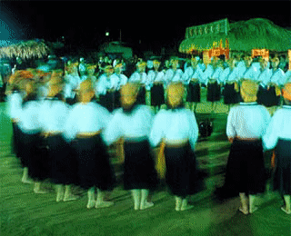

平埔族泛指住在平地的各族原住民，包凱達格蘭族、道卡斯族、巴宰族、巴布拉族、貓霧族、洪安雅族、西拉雅族、馬卡道族等。

西拉雅族的樂舞
西拉雅族是平埔族中最大的一支，下分西拉雅、馬卡道與大武壟三個支系，漢化前的數百年來，西拉雅族人遷徙範圍之廣，橫跨了臺灣的東西兩部分，包括臺南、高雄、屏東、臺東、花蓮等地。
西拉雅人的文化特色主要表現在信仰體系上，以大公廨（祖祠）和阿立祖信仰為主。阿立祖信仰可說是西拉雅人傳統文化的核心，每年遇到阿立祖聖誕，族人便舉行最重要的年中祭儀「夜祭」以表達對神明的感恩。祭典的媒介是稱為「尪姨」的靈媒。夜祭中重要的過程為「獻豬」與「牽曲」，後者藉由歌謠追念祖先來臺的艱辛並提醒子孫感恩與惜福。然而「牽曲」的吟唱具有高度禁忌。夜祭第二天的「嚎海」儀式中，族人準備酒食等祭品獻祭，少女們著素淨白衣黑裙，頭戴草環手牽著手合著「牽曲」而舞。
（以上資料引自吳榮順著《臺灣原住民音樂之美》，傳統音樂中心出版）
巴宰族的樂舞
巴宰族主要居住在埔里盆地，根據文獻，其發源地在豐原大安與東勢一帶，期早期社群中心即為岸裡大社。隨後以此為根據地向外開拓，建立了岸裡九社。其中一批移往埔里地帶，分佈在烏牛欄臺地與眉溪流域。
巴宰族人保存最重要的祭典為「牽田」，目前僅見於埔里的愛蘭社區，族人利用每年十一月舉行祭拜祖先祈求庇祐的儀式。族人吟唱哀怨悲涼的祭歌 ayan 與神靈溝通，唱歌時由祭司帶領交互牽手而舞，舞蹈時圍成圓圈，一面緩慢向右迴轉一面唱祭歌，圓圈中央有一火堆和敲擊樂器的人。祭典為期九天，以集體狩獵畫下句點。